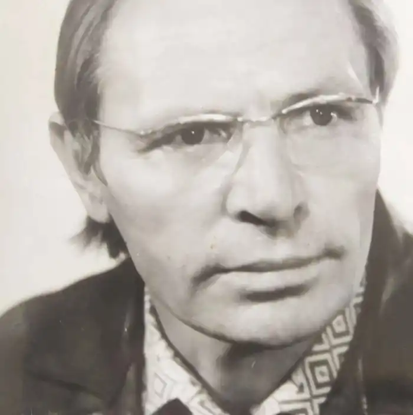

Юрій Васильович Пархоменко (25 жовтня 1927 — 22 листопада 1973) — радянський український редактор, сценарист. Поет. Белетрист. Сатирик. Кіномитець. Художник. Композитор. Співак.
Народився у селі Щаснівка Чернігівської область. Закінчив Київський державний університет (1965), факультет журналістики. Працював фейлетоністом у журналі "Перець", редактором і сценаристом на кіностудії імені Довженка. Трагічно загинув 22 листопада 1973р. Згідно з власним заповітом похований у с.Щаснівка, де і народився.
Юрко Пархоменко є автором повісті " Березневі дзвони", збірки віршів " Мої настрої", збірки новел, збірки гумору. Літературні твори прижиттєво не публікувалися з міркувань радянської цензури. Редактор фільмів: Автор сценаріїв кінокартин: